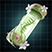
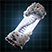
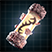

Console:Traits
Version
This article is for the console version of Stellaris only.
Traits represents a species' innate functions, abilities, and personality. A species's traits are selected at the start of a new game, but a species or certain pops of a species can adapt new traits through genetic engineering or rare events. Traits affect a wide variety of areas, from  population growth rate to
population growth rate to  resource output to
resource output to  leader lifespan or even how pops are viewed by each other. Most traits come in mutually exclusive groups that affect the same aspect of the species, such as
leader lifespan or even how pops are viewed by each other. Most traits come in mutually exclusive groups that affect the same aspect of the species, such as  Nomadic and
Nomadic and  Sedentary, and each species template can only have one such trait from the group at any given time. These groups include traits with opposite effects, as well as stronger variants of a trait. Though traits are initially decided at a species level, individual pops of the same species can end up with different traits with genetic modification, producing new subspecies or variants. This rarely happens without player intervention.
Sedentary, and each species template can only have one such trait from the group at any given time. These groups include traits with opposite effects, as well as stronger variants of a trait. Though traits are initially decided at a species level, individual pops of the same species can end up with different traits with genetic modification, producing new subspecies or variants. This rarely happens without player intervention.
Traits are mostly fixed at the start of the game. Altering traits during the game is generally possible only later in the game through some select events or by using genetic engineering. Certain  Biology (for Biological species) and
Biology (for Biological species) and  Industry (for Robotic species) technologies and Ascension Perks add additional
Industry (for Robotic species) technologies and Ascension Perks add additional  Trait Points that can be used to alter all or some of a species'
Trait Points that can be used to alter all or some of a species'  Pops; modifications can range from altering their planet
Pops; modifications can range from altering their planet  Habitability to adding an additional positive trait or removing a negative one.
Habitability to adding an additional positive trait or removing a negative one.
Some traits affect how strongly a pop is  attracted to certain factions.
attracted to certain factions.
Biological traits
Traits are purchased from a points pool, with 2 points being available at the start of the game. Some traits are negative and have a negative cost, refunding points into the pool. Each species is limited to a maximum of 5 traits; traits that cost 0 points do not count against this limit but can only be acquired from certain origins, events, or ascension perks.
Initial traits
Initial traits are available when first creating a species. They can all be changed later via genetic modification. Initial traits can be both positive and negative, with the two being mutually exclusive. Traits that affect  Happiness cannot be added to species with the
Happiness cannot be added to species with the  Hive-Minded trait.
Hive-Minded trait.
The  Adaptive and
Adaptive and  Rapid Breeders traits are not normally available to species with the
Rapid Breeders traits are not normally available to species with the  Lithoid trait but can be added with the
Lithoid trait but can be added with the  Genetic Resequencing tradition.
Genetic Resequencing tradition.
| Positive traits | Negative traits | DLC | |||||||
|---|---|---|---|---|---|---|---|---|---|
| Trait | Effects | Trait | Effects | ||||||
|
−1 | −200 | |||||||
| 2 | +500 | −2 | −200 | ||||||
| 4 | +1000 | ||||||||
| 2 | +500 | ||||||||
| 2 | +500 | −2 | −200 | ||||||
| 1 | +500 | −1 | −200 | ||||||
| 2 | +500 | −1 | −200 | ||||||
| 1 | +500 | −1 | −200 | ||||||
| 2 | +500 | −2 | −200 | ||||||
| 1 | +500 |
|
−1 | −200 | |||||
| 4 | +1000 | ||||||||
| 2 | +500 | ||||||||
| 2 | +500 | ||||||||
| 2 | +500 | ||||||||
| 1 | +500 | ||||||||
| 1 | +500 | ||||||||
| 1 | +500 | ||||||||
|
1 | +500 |
|
−1 | −200 | ||||
| 1 | +500 | −1 | −200 | ||||||
| 2 | +1000 | −2 | −1000 | ||||||
|
1 | +500 | |||||||
|
1 | +1000 |
|
−1 | −1000 | ||||
|
3 | +2000 | |||||||
|
1 | +500 | |||||||
| 2 | +500 | ||||||||
| 1 | +500 | −1 | −200 | ||||||
|
|
2 | +2000 | |||||||
|
1 | −500 | |||||||
|
3 | +1000 | |||||||
| 2 | +1000 | −2 | −1000 | ||||||
| −1 | −500 | ||||||||
Botanical traits
|
|
Available only with the Plantoids DLC enabled. |
Botanical traits are only available to species with the Fungoid or Plantoid archetype or empires that researched the 
| Type | Effects | Excludes | Description | ||
|---|---|---|---|---|---|
|
1 | +1000 | This species is sustained by a combination of both food and sunlight. | ||
|
|
2 | +1500 | This species is sustained by a combination of both food and low-energy radiation, and as such can thrive on the most inhospitable of worlds. | |
|
2 | +2000 | This species is capable of reproduction by budding, in addition to the more usual fertilization of seeds or spores. | ||
|
2 | 0 | Rapid reproduction. High dispersal ability. Zero useful capabilities. |
Silicate traits
|
|
Available only with the Lithoids DLC enabled. |
Silicate traits are only available to species with the Lithoid archetype or empires that researched the 
| Type | Effects | Excludes | Description | ||
|---|---|---|---|---|---|
|
|
0 | 0 | This species has a silicon based biology, and consumes minerals rather than food. They are tougher than traditional organics and have slower metabolisms, making them long lived but slow to reproduce. | |
|
2 | +1000 | The metabolic processes of this species cause regular venting of gases useful to industry. | ||
|
2 | +1000 | The outermost layer of this species is studded with sparkling crystals and gemstones that occasionally flake off. | ||
|
2 | +1000 | The highly compressed spoor created by this species is unstable and contains an unbelievable amount of power. | ||
|
2 | +2000 | With crystalline growths, this species is capable of generating self replicating lattices of themselves, in addition to the more usual reproductive methods. |
Origin traits
Origin traits can only be given by certain empire Origins.
| Type | Effects | Excludes | Origin | Removable | Description | DLC | |||
|---|---|---|---|---|---|---|---|---|---|
|
|
1 | +500 | 33% | This species evolved alongside a second, more advanced species. Never particularly intelligent to begin with, selective breeding for physical prowess and docility has reduced them to servile proles. | ||||
|
|
0 | 0% | Engineered for compliance and war: short-lived, unable to reproduce naturally, and very efficient. | |||||
|
0 | +500 | 33% | This species has survived the horrors of a nuclear apocalypse. Their capacity for thriving in the most inhospitable circumstances should not be underestimated. | |||||
|
0 | +500 | 33% | This species thrives in orbital habitats, with an instinctive ability to efficiently navigate their maze-like corridors and complicated architecture. However their weakened immune systems do not respond well to a planetary environment. | |||||
|
|
0 | 0 | 0% | This species of near-immortals procreates by consuming pops of other species. | ||||
|
|
0 | +500 | 0% | This species thrives under the surface of any planet they can find, at the cost of population growth. | ||||
|
|
0 | 0 | 0% | Millennia of eugenics and wars have led to the creation of an extremely resilient species. |
Overtuned traits
|
|
Available only with the Toxoids DLC enabled. |
Overtuned traits can only be added or removed by empires with the  Overtuned origin. Empires with the
Overtuned origin. Empires with the  Genetic Resequencing tradition can also remove them. Overtuned traits provide bonuses similar to initial traits for less points but also reduce leader lifespan.
Genetic Resequencing tradition can also remove them. Overtuned traits provide bonuses similar to initial traits for less points but also reduce leader lifespan.
| Type | Bonuses (doubled by Damn the Consequences edict) | Description | |||
|---|---|---|---|---|---|
| −10 | 1 | +1000 | More brains equals more brain power. Extra thinking organs have been added in strategic areas of the recipient's body to ensure maximum cognitive capacity. Even if they don't always agree. | ||
| −10 | 1 | +1000 | Slightly shifted facial features, a mix of enhanced and slackened muscular development - and of course outside chemicals - have created the perfect smile. Forever. | ||
| −10 | 1 | +1000 | Supreme hand-eye coordination, near endless endurance and self-purifying lungs have created entire crack teams of miners. Sadly they get brittle without sunlight. | ||
| −10 | 1 | +1000 | Fanaticism on demand: faith is merely a cocktail of hormones, one we have perfected. Where that faith eventually leads is a matter of subsequent guidance. | ||
| −10 | 1 | +1000 | The more appendages, the higher the farming output. Some appendages can even operate while their host is asleep. Rumors of hosts strangled by their new limbs have been deemed unfounded in our latest investigation. | ||
| −10 | 1 | +1000 | By combining genetically redesigned 'instinctive knowledge' and outside chemical stimuli, we have succeeded in vastly accelerating our learning capacities. Although it has resulted in some extremely paranoid individuals. | ||
|
−10 | 1 | +1000 | Adrenaline released on demand and hyper-potent growth hormones have led to a massive increase in strength. Just ignore the occasional internal tearing. | |
| −10 | 1 | +1000 | Reduced consumption, excretion, and rest rates have resulted in twice the beings for half the price. However, demand for protein-rich meals has increased. | ||
| −10 | 1 | +1000 | A few genetic snips and slices here and there and they can survive nearly anywhere. The process comes with an acceptable number of deaths from side effects. | ||
| −10 | 1 | +1000 | Extra internal organs grant a vastly increased innate sensitivity to electricity and magnetic fields. Reports of recipients hearing screams and voices from the reactors should be ignored. | ||
|
−30 | 2 | +2000 | As a computational device, a brain does not run at 100% capacity. However, we have gone beyond the standard usage. If issues are encountered, try turning it off and on again. | |
|
−30 | 2 | +2000 | Scheduled fertility, scheduled interest, scheduled compatibility. Population growth on demand for a strong and stable population - with a few minor edits here and there. Jealous individuals are to be directed to the nearest Fertility Center for mandatory training. | |
|
−30 | 3 | +2000 | The greatest in adaptability genes have been hyper-expressed in these specimens. Mutation rates around 30% indicate a somewhat stable and successful experiment. |
Pre-sapient traits
Pre-sapient species have exclusive traits that cannot otherwise be chosen when creating or modifying a species. They retain these traits after being uplifted as a sapient species and do not cost any trait points. The Forcefully Devolved trait can only be added to species that were turned pre-sapient with the  Devolving Beam colossus weapon.
Devolving Beam colossus weapon.
| Type | Effects | Description |
|---|---|---|
|
Members of this species often prefer old wisdom over new experiences. | |
|
Members of this species are very possessive of the planets they call home. | |
|
This species has evolved to thrive in environments subject to extremely high levels of background radiation. | |
|
Members of this species are more philosophically inclined than most. | |
|
This species has traditionally shunned intellectual pursuits in favor of physical labor. | |
| This species has always, consciously or not, longed to traverse the void between the stars. | ||
|
The brutal devolution process endured by this species had a strong negative impact upon their abilities. |
Special traits
These traits are required for special cases of species and cannot be removed from the creation menu.
The (unrecognized string “hive mind (trait)” for Template:Icon) Hive-Minded trait can only be added by hive mind empires and can only be removed by empires that are not hive minds. Pops with this trait in an non-Hive Mind empire will slowly die while pops without the Hive-Minded trait in a Hive Mind empire can only be displaced, purged or used as livestock.
Special traits that cost trait points can be removed via the  Genetic Resequencing tradition. Special traits that do not cost trait points have a fixed chance of being inherited by hybrid species.
Genetic Resequencing tradition. Special traits that do not cost trait points have a fixed chance of being inherited by hybrid species.
| Type | Effects | Excludes | Requirements | DLC | |||
|---|---|---|---|---|---|---|---|
|
0 | 0 | 0% | A New Species event | |||
|
2 | +100 | random | Impossible Organism event species | |||
| 0 | +500 | 33% | Orbital Speed Demon event (Green) | ||||
|
0 | +250 | 33% | Orbital Speed Demon event (Blue) | |||
|
0 | +250 | 33% | Orbital Speed Demon event (Red) | |||
|
0 | 0 | 0% | ||||
|
|
0 | +1500 | 0% |
|
||
|
0 | +1500 | 25% |
|
|||
|
0 | +1500 | 25% |
|
| ||
|
0 | +2000 | 0% | ||||
|
|
0 | |||||
|
|
+500 | |||||
|
|
0 | +1000 | random | |||
|
|
0 | 0 | random | |||
|
0 | 0 | 0% | ||||
|
|
0 | −150 | 0% | |||
|
|
0 | +500 | 0% | |||
|
|
0 | +750 | 0% | |||
|
1 | 0 | 0% | ||||
|
|
0 | +500 |
|
|||
|
2 | 0 | random |
|
|||
|
0 |
Cyborg traits
Cyborg traits can only be added to species with the  Cybernetic trait if the empire has the
Cybernetic trait if the empire has the  Integrated Anatomy tradition.
Integrated Anatomy tradition.
| Positive Traits | Negative Traits | ||||||
|---|---|---|---|---|---|---|---|
| Trait | Effects | Trait | Effects | ||||
|
1 | +1500 |
|
−2 | −500 | ||
|
1 | +750 | −2 | −150 | |||
|
2 | +500 | |||||
|
1 | +750 | |||||
| 1 | +750 | ||||||
|
1 | +1500 |
|
−2 | −250 | ||
|
1 | +750 | |||||
|
1 | +500 | |||||
| 1 | +750 | ||||||
|
1 | +750 | −2 | −150 | |||
| 1 | +750 | ||||||
|
1 | +500 | |||||
| −1 | −250 | ||||||
Biological ascension traits
Those advanced traits are made available for genetic modification with the  Genetic Resequencing tradition. Biological ascension traits are only half as likely as standard traits to be inherited by hybrid species. The
Genetic Resequencing tradition. Biological ascension traits are only half as likely as standard traits to be inherited by hybrid species. The  Exotic Metabolism trait also requires the
Exotic Metabolism trait also requires the  Toxoids DLC. Biological ascension gives the ability to apply
Toxoids DLC. Biological ascension gives the ability to apply  Adaptive and
Adaptive and  Rapid Breeders to
Rapid Breeders to  Lithoid pops.
Lithoid pops.
| Type | Effects | Excludes | Description | ||
|---|---|---|---|---|---|
|
|
2 | +1000 | This species has the curious evolutionary adaptation of being highly nutritious when eaten. | |
|
|
2 | +1000 | This species has been engineered to be especially mineral-rich. | |
|
2 | +2000 | This species has been engineered to have an incredible knack at working with machinery. | ||
|
|
3 | +1500 | Unessential neural pathways relating to self-preservation and free-will are severed, creating a docile and obedient client species. | |
|
|
2 | +1500 | Artificially grown in cloning vats, the natural reproductive abilities of this species have been negatively impacted. | |
|
|
4 | +2000 | Biological engineering has unlocked previously dormant parts of this species' brains, greatly increasing mental acuity. | |
|
|
4 | +2000 | The natural fecundity of this species has been dramatically enhanced through aggressive physical and behaviorial sculpting. | |
|
|
4 | +2000 | Bio-Optimized organs with redundant functions have made this species extraordinarily resistant to environmental hazards and disease. | |
|
1 | +750 | A metabolism based on exotic - and expensive - gases has vastly enhanced this species' abilities. |
Leviathan traits
Leviathan traits can only be added by empires that researched the 
| Type | Effects | Excludes | Guardians | Description | ||
|---|---|---|---|---|---|---|
|
|
3 | +1000 |
|
This species has the genetic material from a stellar dragon spliced into its DNA. As such, they shed scales which can be recycled into useful alloys. | |
|
3 | +1500 | This species has added genetic material from the Tiyanki Matriarch into their DNA sequence. This has granted them rapid asexual reproduction, as well as a few unexpected tentacles. | |||
|
|
3 | +1500 | This species has the genetic material from the Voidspawn spliced into its DNA. Subsisting off cosmic radiation, they are highly resistant to hostile environments. |
Climate preference traits
Each organic species has a climate preference trait that determines their base  Habitability on the various types of planets, usually that corresponding to the type of their homeworld. Habitability traits can be changed through genetic modification, but a pop can never have more than one Habitability trait. The Habitability of other celestial body types is unaffected by these traits. Habitability cannot be changed if the species has the
Habitability on the various types of planets, usually that corresponding to the type of their homeworld. Habitability traits can be changed through genetic modification, but a pop can never have more than one Habitability trait. The Habitability of other celestial body types is unaffected by these traits. Habitability cannot be changed if the species has the  Aquatic trait.
Aquatic trait.
| Preference | Climate | |||
|---|---|---|---|---|
| Dry |
|
| ||
| Dry |
| |||
| Dry |
| |||
| Frozen |
|
| ||
| Frozen |
| |||
| Frozen |
| |||
| Wet |
|
| ||
| Wet |
| |||
| Wet |
|
Exotic climate preferences
Exotic climate preferences can only be obtained through Origins, conquest of a unique species, the A New Species event on a matching celestial body or when the  Omnicodex relic creates a species on a matching celestial body.
Omnicodex relic creates a species on a matching celestial body.
| Preference | on native climate |
on regular planets |
Sources other than the Omnicodex and A New Species event |
|---|---|---|---|
| 80% |
60% | Pre-FTL or pre-sapient species inhabiting a Tomb World Horizon Signal event | |
| 100% |
0% | Primitive or pre-sapient species inhabiting a Gaia World | |
| 100% |
0% | Sanctuary pre-FTL civilizations | |
| 100% |
0% | Enclave pops | |
| 100% |
0% | ||
| 100% |
0% | ||
| 80% |
0% | ||
| 80% |
0% |
Robot traits
All robot species have either the  Mechanical or the
Mechanical or the  Machine trait.
Machine trait.  Mechanical Pops can exist within
Mechanical Pops can exist within  Machine Intelligence empires via conquest but
Machine Intelligence empires via conquest but  Machine Pops cannot exist outside
Machine Pops cannot exist outside  Machine Intelligence empires. All such species can then be given new traits through Robomodding once the
Machine Intelligence empires. All such species can then be given new traits through Robomodding once the  Machine Template System technology is researched, a few of them being restricted to
Machine Template System technology is researched, a few of them being restricted to  Mechanical or
Mechanical or  Machine species. Robotic traits can be both positive and negative, which are mutually exclusive with each other, and both of them can be added and removed at will once the technology to enable Robomodding becomes available.
Machine species. Robotic traits can be both positive and negative, which are mutually exclusive with each other, and both of them can be added and removed at will once the technology to enable Robomodding becomes available.
Empires that are not  Machine Intelligence must research higher tiers of robot technologies before they can add some of the more powerful traits to
Machine Intelligence must research higher tiers of robot technologies before they can add some of the more powerful traits to  Mechanical Pops.
Mechanical Pops.
| Positive Traits | Negative Traits | Requirements | ||||||
|---|---|---|---|---|---|---|---|---|
| Trait | Effect | Trait | Effect | |||||
|
0 | 0 | ||||||
|
0 | 0 | ||||||
|
2 | +750 |
| |||||
| 1 | +750 | −1 | −150 | |||||
| 1 | +750 | −1 | −150 | |||||
| 3 | +500 | |||||||
| 1 | +750 | −1 | −150 | |||||
|
2 | +750 | ||||||
| 2 | +750 | |||||||
| 1 | +750 | −1 | −150 | |||||
| 2 | +750 | |||||||
| 2 | +500 |
| ||||||
| 1 | +1500 | −1 | −200 | |||||
| 2 | +750 | |||||||
| 1 | +750 | |||||||
| 2 | +1500 | −2 | −200 | |||||
| 2 | +750 | −2 | −150 | |||||
| 2 | +750 | |||||||
| 2 | +500 |
| ||||||
References
| Exploration | Exploration • FTL • Unique systems • L-Cluster • Pre-FTL species • Fallen empire • Spaceborne aliens • Enclaves • Guardians • Marauders • Caravaneers |
| Celestial bodies | Celestial body • Colonization • Planetary features • Planet modifiers |
| Discovery | Discovery • Anomaly • Archaeological site • Astral rift • Relics • Collection |
| Species | Species • Pop modification • Biological traits • Machine traits • Population • Species rights • Ethics |
| Leaders | Leader • Common leader traits • Commander traits • Official traits • Scientist traits • Paragons |
| Governance | Empire • Origin • Government • Civics • Council • Policies • Edicts • Factions • Traditions • Ascension perks • Ambition • Situations |
| Economy | Resources • Planetary management • Districts • Jobs • Designation • Trade • Megastructures • Waystation |
| Buildings | Planet capital • Common buildings • Planet unique • Empire unique • Holdings |
| Ships | Ship • Arkship • Ship designer • Core components • Weapon components • Utility components • Mutations • Offensive mutations |
| Technology | Technology • Physics research • Society research • Engineering research |
| Diplomacy | Diplomacy • Relations • Galactic community • Federations • Subject empires • Intelligence • Contracts • AI personalities |
| Warfare | Warfare • Space warfare • Land warfare • Starbase • Crisis |
| Others | Events • The Shroud • Preset empires • AI players • Stat modifiers • Console commands • Easter eggs |